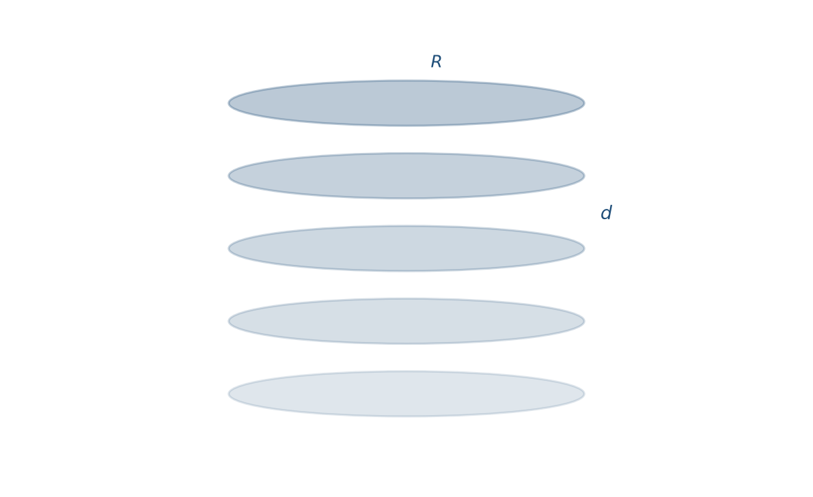
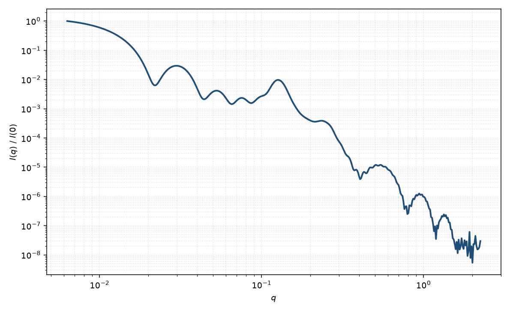

堆叠圆盘
stacked disks
适用场景
沿共同法向堆叠 $N$ 片圆盘（或核壳盘），层间距 $d$。适用于黏土 tactoid、未剥离的层状纳米片、以及 bicelle 发生一维絮凝的样品。中间区仍接近单盘的 $q^{-2}$，并在 $q\simeq 2\pi/d$ 出现层状干涉峰。
若堆叠无序到只剩一层，退回单盘；若横向无限大，应改用层状准晶堆叠，而不是有限半径的堆叠盘。
物理图像
强度是单盘形式因子乘以一维格子（或准晶）干涉函数。Kratky 与 Porod 把相邻间距写成高斯涨落 $\sigma_d$ 的一维堆叠：粉末平均时把 $q\cos\alpha$ 投影到法向。Guinier 给出单盘的 $F_{\mathrm{disk}}$。
峰宽由 $N$ 与 $\sigma_d$ 共同决定：少层宽峰，间距无序则高阶峰迅速消失。
示意图


核心公式
取向 $\alpha$ 下
$$I(q,\alpha)\propto |F_{\mathrm{disk}}(q,\alpha)|^2\,S_{1\mathrm{D}}(q\cos\alpha),$$ $$S_{1\mathrm{D}}(q_\parallel)=1+\frac{2}{N}\sum_{k=1}^{N-1}(N-k)\cos(k d q_\parallel)\,\mathrm{e}^{-k(q_\parallel\sigma_d)^2/2}.$$一维数据再对 $\sin\alpha\,\mathrm{d}\alpha$ 平均。$F_{\mathrm{disk}}$ 可以是均匀短圆柱，也可以是核壳盘。
参数表
| 参数 | 符号 | 含义 | 单位 | 典型范围 |
|---|---|---|---|---|
| 盘半径 | $R$ | 单片半径 | Å | 50–1000 Å |
| 单片厚度 | $H$ | 核（加壳）厚度 | Å | 10–80 Å |
| 层间距 | $d$ | 相邻盘中心距 | Å | 略大于 $H$ |
| 层数 | $N$ | 堆叠片数 | — | 2–50 |
| 间距无序 | $\sigma_d$ | 一维准晶涨落 | Å | $0$–$0.2d$ |
| 取向角 | $\theta,\phi$ | 堆叠轴（二维） | 度 | 剪切可取向 |
拟合注意
$N$ 与 $\sigma_d$ 都加宽干涉峰。优先用峰位定 $d$，用高阶峰是否存在约束无序，再用峰宽估 $N$。不要把结构峰当成单盘半径。
半径多分散钝化盘的 Bessel 振荡，对层状峰影响较小；厚度多分散则同时影响 $F_{\mathrm{disk}}$ 与有效 $d$。取向：粉末平均把层状峰抹成较宽的肩；二维弧向收窄才说明堆叠轴取向。
磁性：若只有核层带磁矩，磁通道的 $S_{1\mathrm{D}}$ 仍在，但 $F_{\mathrm{disk}}$ 用磁厚度与磁 SLD，不必与核通道相同。
相近模型
参考文献
- Kratky, O.; Porod, G. Diffuse small-angle scattering of X-rays in colloid systems. J. Colloid Sci. 1949, 4, 35–54. DOI: 10.1016/0095-8522(49)90032-X
- Guinier, A.; Fournet, G. Small-Angle Scattering of X-rays. Wiley: New York, 1955.